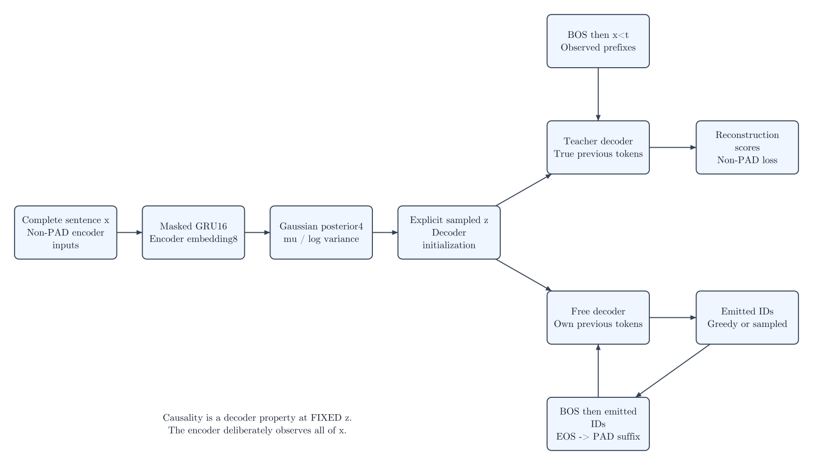
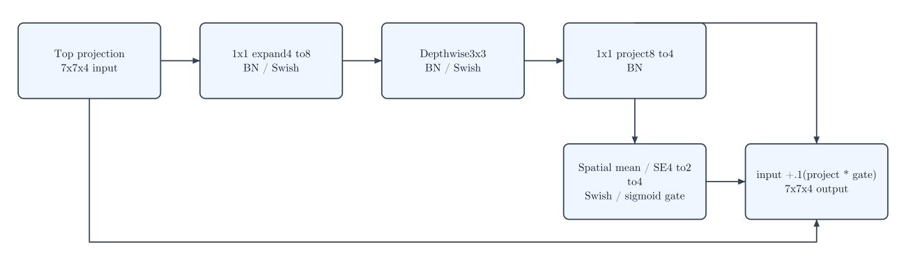
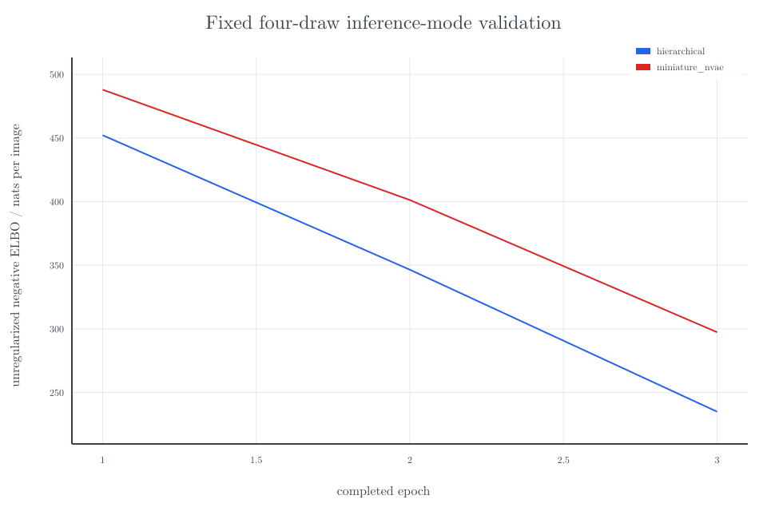
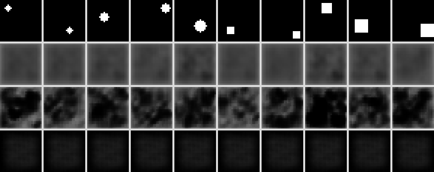
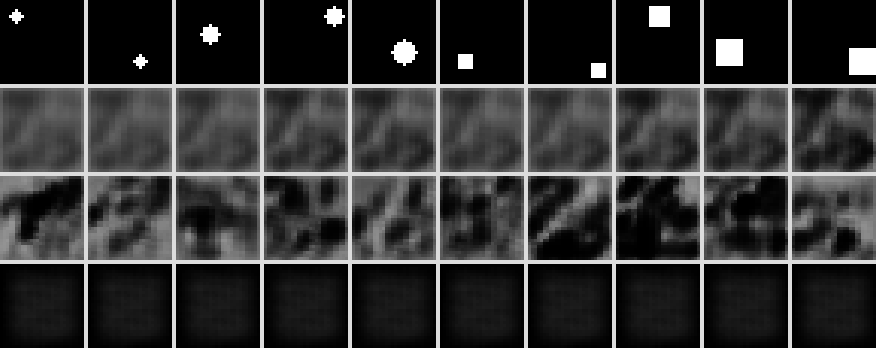
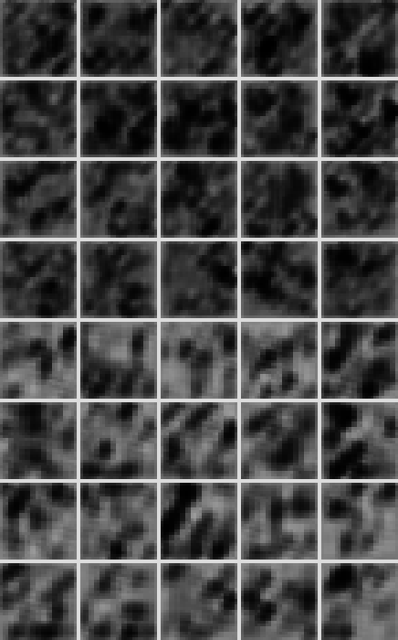

Spatial Gaussian Hierarchies and a Miniature NVAE
Abstract
A hierarchical VAE samples a global Gaussian group, then conditions a spatial latent group on both the image and the sampled parent. This report runs a two-group spatial hierarchy and a miniature NVAE adaptation with additive posterior corrections, one depthwise/BN/Swish/SE residual cell and penalties on two rank-one prior kernels. Both preserve complete visible three-epoch fitting, separate moving statistics, explicit noise and validation-only checkpoint selection. On294 known-factor binary images, each receives21 Adam updates and selects epoch3. Heldout negative ELBO is239.568/297.564nats/image; recursive greedy-mean MSE0.10409/0.10624 is worse than fitting mean0.04855. The architectures differ, so this is not a controlled quality comparison. Unfiltered reconstructions and ancestral samples retain the short runs' limitations. The miniature model does not reproduce full NVAE's depth, scale or all-kernel training recipe.
Two stochastic groups, with both samples reaching the decoder
Let z2 be a global two-coordinate latent and z1 a7×7 one-channel spatial latent. The model factorizes as p(z2)p(z1|z2)p(x|z1,z2). Two3×3 Swish convolutions and2×2 average pools produce a7×7×4 image feature map. Dense heads predict q(z2|x); supplied top noise samples z2. A dense projection and cell turn z2 into a7×7×4 top feature, giving learned Gaussian p(z1|z2). A fusion of image and top features predicts the lower posterior q(z1|x,z2). Only *sampled latent groups* reach the decoder: the image feature is used for inference, not a deterministic image-to-decoder bypass.
[Vahdat and Kautz's NVAE](https://arxiv.org/abs/2007.03898) combines residual Gaussian parameterization with a carefully designed hierarchical architecture and spectral regularization. This small teaching adaptation uses just two groups, one residual cell and two penalized prior kernels. The ordinary hierarchy uses direct lower posterior heads and a simple Swish cell. These are different networks, not a matched ablation. Related hierarchical inference is described by [Sonderby et al.'s Ladder VAE](https://arxiv.org/abs/1602.02282); the present posterior uses direct/additive heads rather than precision-weighted evidence/prior fusion.
#include <dm/dm.hpp>
int main() {
std::filesystem::create_directories("build");
dm::graphics::Diagram d(48, 1450);
dm::graphics::DiagramNodeStyle wide;
wide.width = 4.6;
wide.height = 2.6;
dm::graphics::DiagramStroke arrow;
arrow.arrow = true;
auto dash = arrow;
dash.dashed = true;
d.node("x", {0, 0}, "Binary image\n784 pixels")
.node("enc", {6, 0}, "Swish / average pools\n7x7x4 image feature", wide)
.node("q2", {12, 0}, "Top Gaussian q(z2|x)\nTwo coordinates", wide)
.node("z2", {12, -4}, "Top sample z2\nExplicit top epsilon\nPrior generation: N(0,I)", wide)
.node("feature", {18, -4}, "Top projection / cell\n7x7x4 sampled-top feature", wide)
.node("prior", {24, -4}, "Learned lower prior\np(z1|z2),49 coordinates", wide)
.node("q1", {18, -8}, "Image/top posterior fusion\nDirect or residual heads", wide)
.node("z1", {24, -8}, "Lower sample z1\nExplicit lower epsilon", wide)
.node("dec", {30, -8}, "Both latent groups\nRepeat/convolution decoder", wide)
.edge("x", "enc")
.edge("enc", "q2")
.edge("q2", "z2")
.edge("z2", "feature")
.edge("feature", "prior")
.edge("feature", "q1")
.edge("prior", "q1", "residual only", dash)
.edge("q1", "z1")
.edge("z1", "dec")
.path({{6, -1.3}, {6, -8}, {15.7, -8}}, arrow)
.path({{18, -2.7}, {18, -1.5}, {30, -1.5}, {30, -6.7}}, arrow)
.save_svg("build/hierarchy_method.svg");
}
A conditional Gaussian KL by hand
For posterior N(mu,diag(exp(l))) and prior N(pm,diag(exp(pl))),
The direct hierarchy sets(mu,l)=(hm,hl). NVAE instead sets(mu,l)=(pm+hm,pl+hl). Zero residual heads therefore give the prior and exact zero KL. This is additive mean/log- variance correction, not Gaussian precision fusion. All prior/head paths remain differentiable. For one coordinate with prior mean1, variance4, residual mean.5 and zero variance residual, KL=.5×.5²/4=.03125. Adding log-variance residual.2 gives.041951379nats.
#include <dm/dm.hpp>
int main() {
namespace n = dm::nn;
const auto t = n::DType::Float64;
const auto pm = n::full({1, 1}, 1, t), pl = n::full({1, 1}, std::log(4.), t);
std::vector<double> residual, base, wider;
for (int k = 0; k <= 20; ++k) {
const double delta = k / 20.;
residual.push_back(delta);
for (double v : {0., .2}) {
const auto q =
n::models::HierarchyPosterior(pm, pl, n::full({1, 1}, delta, t), n::full({1, 1}, v, t));
const double value = n::models::ConditionalGaussianKl(q.mu, q.log_variance, pm, pl).item();
(v == 0 ? base : wider).push_back(value);
}
}
if (base[0] != 0 || std::abs(base[10] - .03125) > 1e-14 ||
std::abs(wider[10] - .5 * (std::exp(.2) - 1 - .2 + .25 / 4)) > 1e-14)
return 1;
auto chart = dm::graphics::RPlot::create();
chart.lines(residual, base, "delta logvar0", dm::RGBA{37, 99, 235}, 2)
.lines(residual, wider, "delta logvar.2", dm::RGBA{220, 38, 38}, 2)
.title("Conditional KL / prior mean1, variance4")
.x_label("residual mean correction")
.y_label("KL / nats per coordinate")
.save_svg("build/hierarchy_hand.svg");
std::print(
"Residual mean.5: KL {:.9f}; with logvar correction.2: {:.9f}.\n", base[10], wider[10]);
}Residual mean.5: KL 0.031250000; with logvar correction.2: 0.041951379.

For inference, supplied epsilon has51 columns:49 lower-group draws first, then two top draws. Changing lower epsilon changes only the lower sample and its decode; prior/posterior heads stay fixed. Changing top epsilon changes z2, hence the learned prior *and* lower posterior. The top KL is analytic to N(0,I); the lower conditional KL is analytic at each sampled z2. The objective preserves the source grouping:
Four fixed validation draws average *every term* over draws and images, since the lower KL depends on sampled top noise. Negative ELBO is a Monte Carlo bound estimate, not exact marginal log likelihood. There are no free bits, variance clipping, KL annealing or flows. Binary pixels give Bernoulli NLL; soft targets would give cross-entropy instead.
The miniature NVAE cell and its separate moving state
Top projection maps two coordinates to196 values. The ordinary cell is a3×3 four-channel Swish convolution. The NVAE cell instead expands4→8 with bias-free1×1 convolution, applies BN/Swish, depthwise3×3 multiplier1, BN/Swish, projects8→4 with bias-free1×1 and BN, then uses spatial-mean squeeze/excitation4→2Swish→4sigmoid. The result is input+.1(project×gate). All weights are ordinary Glorot uniform; depthwise initialization is per input channel. Biases are zero, BN gamma1/beta0. The cell has13 trainable tensors/198 scalars and six moving buffers/40 scalars. Full counts are26 tensors/1977 scalars for the ordinary hierarchy and 37/2027 plus those buffers for miniature NVAE. Initialization order and seed2609 remain exact.
#include <dm/dm.hpp>
int main() {
dm::graphics::Diagram d(50, 1300);
dm::graphics::DiagramNodeStyle wide;
wide.width = 4.7;
wide.height = 2.5;
dm::graphics::DiagramStroke arrow;
arrow.arrow = true;
d.node("in", {0, 0}, "Top projection\n7x7x4 input", wide)
.node("expand", {6, 0}, "1x1 expand4 to8\nBN / Swish", wide)
.node("depth", {12, 0}, "Depthwise3x3\nBN / Swish", wide)
.node("proj", {18, 0}, "1x1 project8 to4\nBN", wide)
.node("se", {18, -4}, "Spatial mean / SE4 to2 to4\nSwish / sigmoid gate", wide)
.node("out", {24, -4}, "input +.1(project * gate)\n7x7x4 output", wide)
.edge("in", "expand")
.edge("expand", "depth")
.edge("depth", "proj")
.edge("proj", "se")
.edge("se", "out")
.path({{18, 1.25}, {24, 1.25}, {24, -2.75}}, arrow)
.path({{0, -1.25}, {0, -6}, {24, -6}, {24, -5.25}}, arrow)
.save_svg("build/hierarchy_cell.svg");
}
BN uses population batch variance for normalization with epsilon.001, but unbiased batch variance in the moving update. Momentum is.9. Training statistics and state mutation have separate controls: training=true/update_stats=false supports gradient/inspection passes; training=true/update_stats=true updates moving moments exactly once with the pre-update forward. Inference uses detached moving means/variances. The caller excludes state from Adam and saves/restores *both* stores. Missing buffers are lazily initialized, so restoring weights alone silently gives different inference. Native tests demonstrate that difference.
Only two1×1 prior kernels are regularized. Each reshapes to a4×1 matrix, whose sole singular value is its L2 norm. The source uses smoothed norms, R=1e-4[sqrt(sum(W_pm²)+1e-12)+sqrt(sum(W_pl²)+1e-12)]. Train_loss=L+R; validation uses L. This is not full NVAE's all-kernel spectral schedule or warmup. Isolated regularizer and unregularized prior-head derivatives are saved before the first update.
Native data and paired explicit fitting programs
Native beta-vae-assets preparation generates294 unique28×28 binary circle/square images: shape2×size3×x7×y7, split deterministically into210 fit/42 validation/42 test. Source IDs are disjoint; factors never enter either network or selection. The optional independent checker regenerates all230,496 pixels and assignments. This teaching lattice is not a paper benchmark.
#include <dm/dm.hpp>
int main() {
namespace n = dm::nn;
const std::filesystem::path cache = dm::datasets::data_home();
dm::datasets::prepare_example_data("beta-vae-assets", cache.string());
auto data = n::load_npz((cache / "beta_vae/factors.npz").string());
std::set<int> ids;
std::set<std::vector<int>> images;
for (auto& [name, value] : data) {
if (name.ends_with("_images")) {
for (int i = 0; i < value.size(0); ++i)
if (!images.insert(n::select(value, 0, i).to_vector<int>()).second)
return 1;
value = n::cast(value, n::DType::Float32);
}
if (name.ends_with("_source_ids"))
for (int id : value.to_vector<int>())
if (!ids.insert(id).second)
return 1;
}
if (ids.size() != 294 || images.size() != 294)
return 1;
for (const std::string variant : {"hierarchical", "miniature_nvae"}) {
const auto root = std::filesystem::path("build/hierarchy") / variant;
std::filesystem::create_directories(root);
n::save_npz((root / "data.npz").string(), data);
std::filesystem::copy_file(
cache / "beta_vae/manifest.json",
root / "data_manifest.json",
std::filesystem::copy_options::overwrite_existing);
}
std::print("294 unique binary images and IDs; same210/42/42 pools for both architectures.\n");
}294 unique binary images and IDs; same210/42/42 pools for both architectures.
Both fits use BatchOrder(210,32,2617), seven updates per epoch including a final18-row batch, three epochs/21 updates each. Adam uses.003,.9/.999 and1e-8, on trainable weights only. GaussianNoise supplies explicit51-coordinate banks: training seeds2664/2665/2666, fixed four-draw fit2621/validation2633/test2647, prior2657. The local MT19937/Box–Muller Float64 values and Float32 casts are saved per variant. No forward draws noise internally.
Completed epochs1–3 compete on fixed four-draw *unregularized inference-mode* validation negative ELBO. Lower KL is averaged over all top draws; every Float32 per-row term accumulates in Float64, draw then row. The selected checkpoint contains weights and all moving buffers. Extra first-gradient/forward/regularizer probes use batch moments without moving updates. The actual training forward updates BN state once, then explicit gradients update only weights. The complete program includes fresh restore, both-noise interventions, recursive greedy means, fixed-noise repeatability, target-free decoding, single/batch parity, ancestral generation and parameter/state immutability. Helpers contain only I/O, native forwards and metric aggregation.
#include <dm/dm.hpp>
namespace nn = dm::nn;
void Require(bool condition, const std::string& why) {
if (!condition)
throw std::runtime_error(why);
}
void Near(double x, double y, double tolerance, const std::string& why) {
Require(std::abs(x - y) <= tolerance, why);
}
struct BetaFactorData {
nn::Tensor images, factors, source;
};
struct VaeNoiseBank {
nn::Tensor standard, epsilon;
};
nn::Tensor Flatten(const nn::Tensor& t) {
return nn::reshape(t, {t.size(0), 784});
}
nn::Tensor Find(const nn::NamedTensors& a, const std::string& key) {
for (const auto& [k, v] : a)
if (k == key)
return v;
throw std::runtime_error(key);
}
std::vector<float> Bytes(const nn::Tensor& t) {
return t.contiguous().to_vector<float>();
}
nn::NamedTensors Arrays(const nn::ParameterStore& p) {
nn::NamedTensors a;
for (const auto& k : p.names())
a.emplace_back(k, p.at(k).detach().clone());
return a;
}
auto Snapshot(const nn::ParameterStore& p) {
return p.flatten();
}
nn::NamedTensors CheckGradients(
const nn::ParameterStore& p,
const std::vector<nn::Tensor>& gs,
const std::string&,
const std::string&) {
nn::NamedTensors a;
Require(gs.size() == p.size(), "all10 gradients");
const auto names = p.names();
for (std::size_t i = 0; i < gs.size(); ++i) {
double norm = 0;
for (double x : gs[i].to_vector<double>()) {
Require(std::isfinite(x), "finite derivatives");
norm += x * x;
}
Require(norm > 0, "nonzero derivative in each tensor");
a.emplace_back(names[i], gs[i]);
}
return a;
}
VaeNoiseBank HierarchyNoise(std::int64_t n, std::int64_t samples, std::uint32_t seed) {
const auto standard = nn::models::GaussianNoise({n, 51}, samples, seed);
return {standard, nn::cast(standard, nn::DType::Float32)};
}
nn::Tensor HierarchyNoiseAt(const VaeNoiseBank& bank, int k) {
Require(k >= 0 && k < bank.epsilon.size(0), "available hierarchy draw");
return nn::select(bank.epsilon, 0, k).contiguous();
}
nn::NamedTensors Arrays(const nn::ParameterStore& p, const nn::ParameterStore& state) {
auto out = Arrays(p);
for (const auto& name : state.names())
out.emplace_back("state/" + name, state.at(name).detach().clone());
return out;
}
auto Snapshot(const nn::ParameterStore& p, const nn::ParameterStore& state) {
std::vector<std::vector<float>> out;
for (const auto& [name, t] : Arrays(p, state))
out.push_back(Bytes(t));
return out;
}
void Load(nn::ParameterStore& p, nn::ParameterStore& state, const std::string& file) {
auto arrays = nn::load_npz(file);
Require(arrays.size() == p.size() + state.size(), "all weights and statistics");
for (const auto& [name, value] : arrays) {
const bool stat = name.starts_with("state/");
auto& store = stat ? state : p;
const auto key = stat ? name.substr(6) : name;
Require(store.contains(key) && store.at(key).shape() == value.shape(), "matching checkpoint");
store.set(key, value.contiguous().clone());
}
}
nn::NamedTensors Evaluate(
nn::ParameterStore& p,
nn::ParameterStore& state,
bool nvae,
const nn::Tensor& images,
const nn::Tensor& noise,
bool training = false) {
nn::NoGradGuard guard;
const auto o = nn::models::HierarchicalVariationalAutoencoder(
p, state, Flatten(images), noise, nvae, training, false);
nn::NamedTensors out{
{"encoder_feature", o.encoder_feature},
{"top_feature", o.top_feature},
{"top_mu", o.top_mu},
{"top_lv", o.top_lv},
{"top_z", o.top_z},
{"prior_mu", o.prior_mu},
{"prior_lv", o.prior_lv},
{"head_mu", o.head_mu},
{"head_lv", o.head_lv},
{"lower_mu", o.lower_mu},
{"lower_lv", o.lower_lv},
{"lower_z", o.lower_z},
{"probability", o.probability},
{"nll", o.nll},
{"kl_lower", o.kl_lower},
{"kl_top", o.kl_top},
{"loss", o.loss},
{"regularizer", o.regularizer},
{"train_loss", o.train_loss}};
for (auto& [name, t] : out) {
t = t.contiguous();
for (double v : t.to_vector<double>())
Require(std::isfinite(v), "finite hierarchy fields");
}
return out;
}
nn::Tensor Decode(
nn::ParameterStore& p,
nn::ParameterStore& state,
bool nvae,
const nn::Tensor& lower,
const nn::Tensor& top) {
nn::NoGradGuard guard;
return nn::models::HierarchyDecode(p, state, lower, top, nvae).contiguous();
}
nn::NamedTensors Prior(
nn::ParameterStore& p,
nn::ParameterStore& state,
bool nvae,
const nn::Tensor& top,
const nn::Tensor& lower_noise) {
nn::NoGradGuard guard;
const auto o = nn::models::HierarchyPrior(p, state, top, lower_noise, nvae);
return {
{"top_z", o.top_z},
{"lower_noise", o.lower_noise},
{"prior_mu", o.prior_mu.contiguous()},
{"prior_lv", o.prior_lv.contiguous()},
{"lower_z", o.lower_z.contiguous()},
{"probability", o.probability.contiguous()}};
}
std::vector<double> HierarchyScore(
nn::ParameterStore& p,
nn::ParameterStore& state,
bool nvae,
const nn::Tensor& images,
const VaeNoiseBank& bank) {
double nll = 0, lower = 0, top = 0;
const auto n = images.size(0), samples = bank.epsilon.size(0);
for (int k = 0; k < samples; ++k) {
auto f = Evaluate(p, state, nvae, images, HierarchyNoiseAt(bank, k));
auto a = Find(f, "nll").to_vector<float>(), b = Find(f, "kl_lower").to_vector<float>(),
c = Find(f, "kl_top").to_vector<float>();
for (int row = 0; row < n; ++row) {
nll += a[row];
lower += b[row];
top += c[row];
}
}
const double count = double(n * samples);
return {nll / count, lower / count, top / count, (nll + lower + top) / count};
}
double MaxAbsDiff(const nn::Tensor& a, const nn::Tensor& b, int n) {
const auto x = Bytes(a), y = Bytes(b);
double d = 0;
for (int i = 0; i < n; ++i)
d = std::max(d, std::abs(double(x[i]) - y[i]));
return d;
}
double Mse(const nn::Tensor& a, const nn::Tensor& b) {
return nn::mean(
nn::square(
nn::cast(Flatten(a), nn::DType::Float64) -
nn::cast(Flatten(b), nn::DType::Float64)))
.item();
}
double Difference(const nn::Tensor& a, const nn::Tensor& b) {
Require(a.shape() == b.shape(), "matching shapes");
return MaxAbsDiff(a, b, int(a.numel()));
}
nn::Tensor PixelMean(const nn::Tensor& images) {
const auto v = Flatten(images).to_vector<float>();
std::vector<float> mean(784);
for (int j = 0; j < 784; ++j) {
double total = 0;
for (int b = 0; b < images.size(0); ++b)
total += v[b * 784 + j];
mean[j] = float(total / double(images.size(0)));
}
return nn::from_vector(mean, {784});
}
nn::Tensor Constant(const nn::Tensor& row, int count) {
return nn::broadcast_to(nn::reshape(row, {1, 784}), {count, 784}).contiguous();
}
void Checks(const std::filesystem::path& root) {
auto pm = nn::tensor({{1.f, -2.f, .5f}}), pl = nn::tensor({{.2f, -.4f, .6f}}),
zero = nn::zeros({1, 3});
auto q = nn::models::HierarchyPosterior(pm, pl, zero, zero, true);
auto kl = nn::models::ConditionalGaussianKl(q.mu, q.log_variance, pm, pl);
Near(kl.to_vector<float>()[0], 0, 0, "NVAE zero-residual KL exactly zero");
nn::save_npz(
(root / "residual_algebra.npz").string(),
{{"prior_mu", q.mu}, {"prior_lv", q.log_variance}, {"kl", kl}});
std::cout << "residual posterior zero correction gives prior/KL0 passed" << std::endl;
}
double Train(const std::filesystem::path& root, int epochs, bool nvae) {
const auto data = nn::load_npz((root / "data.npz").string());
std::vector<BetaFactorData> pools;
for (const std::string split : {"fit", "validation", "test"})
pools.push_back(
{Find(data, split + "_images"),
Find(data, split + "_factors"),
Find(data, split + "_source_ids")});
std::filesystem::create_directories(root);
Checks(root);
std::vector<VaeNoiseBank> noise{
HierarchyNoise(210, 4, 2621), HierarchyNoise(42, 4, 2633), HierarchyNoise(42, 4, 2647)},
training;
auto prior_noise = HierarchyNoise(20, 1, 2657);
nn::NamedTensors fixed{
{"prior_standard", prior_noise.standard}, {"prior_epsilon", prior_noise.epsilon}};
for (int split = 0; split < 3; ++split) {
const std::string name = split == 0 ? "fit" : split == 1 ? "validation" : "test";
fixed.emplace_back(name + "_standard", noise[split].standard);
fixed.emplace_back(name + "_epsilon", noise[split].epsilon);
}
nn::save_npz((root / "fixed_noise.npz").string(), fixed);
for (int e = 1; e <= epochs; ++e) {
training.push_back(HierarchyNoise(210, 1, 2663 + e));
nn::save_npz(
(root / ("train_noise_epoch" + std::to_string(e) + ".npz")).string(),
{{"standard", training.back().standard}, {"epsilon", training.back().epsilon}});
}
nn::ParameterStore model(2609), state(0);
{
nn::NoGradGuard guard;
nn::models::HierarchicalVariationalAutoencoder(
model, state, nn::zeros({2, 784}), nn::zeros({2, 51}), nvae);
}
nn::OptimizerConfig config;
config.kind = nn::OptimizerKind::Adam;
nn::Optimizer optimizer(model, .003, config);
Require(
model.size() == (nvae ? 37u : 26u) && model.count() == (nvae ? 2027 : 1977) &&
state.size() == (nvae ? 6u : 0u),
"spatial hierarchy/NVAE parameter and BN census");
nn::save_npz((root / "initial_arrays.npz").string(), Arrays(model, state));
nn::BatchOrder order(210, 32, 2617);
std::ofstream history(root / "history.tsv"), batches(root / "batches.tsv");
history.precision(17);
history << "epoch\ttrain_preupdate_negative_elbo\tvalidation_nll\tvalidation_lower_"
"kl\tvalidation_top_kl\t"
"validation_negative_elbo\n";
batches << "epoch\tstep\trow\tsource_id\n";
const auto fit_source = pools[0].source.to_vector<int>();
const auto best_path = (root / "best.npz").string();
double best = std::numeric_limits<double>::infinity();
int selected = 0, step = 0;
const auto started = std::chrono::steady_clock::now();
for (int epoch = 1; epoch <= epochs; ++epoch) {
order.begin_epoch();
double sum = 0;
int seen = 0;
auto epsilon = HierarchyNoiseAt(training[epoch - 1], 0);
for (;;) {
auto rows = order.next();
if (rows.empty())
break;
auto x = nn::take_rows(pools[0].images, rows), e = nn::take_rows(epsilon, rows);
if (step == 0) {
nn::save_npz((root / "first_batch.npz").string(), {{"images", x}, {"epsilon", e}});
auto g = CheckGradients(
model,
nn::grad(
nn::models::HierarchicalVariationalAutoencoder(
model, state, Flatten(x), e, nvae, true, false)
.train_loss,
model.parameters()),
"all hierarchy gradients finite",
"all hierarchy/NVAE trainable tensors receive gradients");
nn::save_npz((root / "first_gradients.npz").string(), g);
nn::save_npz(
(root / "first_forward.npz").string(), Evaluate(model, state, nvae, x, e, true));
if (nvae) {
const auto o = nn::models::HierarchicalVariationalAutoencoder(
model, state, Flatten(x), e, true, true, false);
const std::vector<nn::Tensor> heads{model.at("prior_mu/W"), model.at("prior_lv/W")};
nn::GradOptions keep;
keep.retain_graph = true;
const auto r = nn::grad(o.regularizer, heads, keep), l = nn::grad(o.loss, heads);
nn::save_npz(
(root / "first_regularizer_gradients.npz").string(),
{{"regularizer/prior_mu/W", r[0]},
{"regularizer/prior_lv/W", r[1]},
{"without_regularizer/prior_mu/W", l[0]},
{"without_regularizer/prior_lv/W", l[1]}});
}
}
const auto out = nn::models::HierarchicalVariationalAutoencoder(
model, state, Flatten(x), e, nvae, true, true);
sum += double(rows.size()) * out.train_loss.item<float>();
const auto gradients = nn::grad(out.train_loss, model.parameters());
optimizer.step(gradients);
seen += int(rows.size());
for (auto row : rows)
batches << epoch << '\t' << step << '\t' << row << '\t' << fit_source[row] << '\n';
if (step == 0)
nn::save_npz((root / "first_update_arrays.npz").string(), Arrays(model, state));
++step;
}
Require(seen == 210, "all210fitting cases once per epoch");
auto score = HierarchyScore(model, state, nvae, pools[1].images, noise[1]);
history << epoch << '\t' << sum / seen;
for (auto value : score)
history << '\t' << value;
history << '\n';
nn::save_npz(
(root / ("epoch" + std::to_string(epoch) + "_arrays.npz")).string(), Arrays(model, state));
if (score[3] < best) {
best = score[3];
selected = epoch;
nn::save_npz(
best_path,
Arrays(
model,
state)); // four-sample validation ELBO selects checkpoint (weights + BN statistics)
}
std::cout << "epoch" << epoch << ":validation NLL=" << score[0] << ",lowerKL=" << score[1]
<< ",topKL=" << score[2] << ",negativeELBO=" << score[3] << std::endl;
}
const double seconds =
std::chrono::duration<double>(std::chrono::steady_clock::now() - started).count();
nn::ParameterStore deployed(2609), deployed_state(0);
{
nn::NoGradGuard guard;
nn::models::HierarchicalVariationalAutoencoder(
deployed, deployed_state, nn::zeros({2, 784}), nn::zeros({2, 51}), nvae);
}
Load(deployed, deployed_state, best_path);
Near(
HierarchyScore(deployed, deployed_state, nvae, pools[1].images, noise[1])[3],
best,
1e-8,
"fresh selected validation score");
const auto before = Snapshot(deployed, deployed_state);
nn::NamedTensors output;
for (int split = 0; split < 3; ++split) {
const std::int64_t n = pools[split].images.size(0);
const std::string name = split == 0 ? "fit" : split == 1 ? "validation" : "test";
auto greedy = Evaluate(deployed, deployed_state, nvae, pools[split].images, nn::zeros({n, 51}));
Require(
Bytes(Find(greedy, "lower_z")) == Bytes(Find(greedy, "lower_mu")) &&
Bytes(Find(greedy, "top_z")) == Bytes(Find(greedy, "top_mu")),
"both zero-noise samples equal their recursive means");
for (const auto& [key, value] : greedy)
output.emplace_back(name + "_greedy_" + key, value);
for (int k = 0; k < 4; ++k) {
auto f = Evaluate(
deployed, deployed_state, nvae, pools[split].images, HierarchyNoiseAt(noise[split], k));
for (const auto& [key, value] : f)
output.emplace_back(name + "_draw" + std::to_string(k) + "_" + key, value);
}
}
auto test =
Evaluate(deployed, deployed_state, nvae, pools[2].images, HierarchyNoiseAt(noise[2], 0)),
repeat =
Evaluate(deployed, deployed_state, nvae, pools[2].images, HierarchyNoiseAt(noise[2], 0));
Require(
Bytes(Find(test, "probability")) == Bytes(Find(repeat, "probability")) &&
Bytes(Find(test, "probability")) ==
Bytes(Decode(
deployed, deployed_state, nvae, Find(test, "lower_z"), Find(test, "top_z"))),
"repeat and target-free lower latent decode BITEXACT");
auto single = Evaluate(
deployed,
deployed_state,
nvae,
nn::take_rows(pools[2].images, {0}),
nn::take_rows(HierarchyNoiseAt(noise[2], 0), {0}));
const double parity = MaxAbsDiff(Find(single, "probability"), Find(test, "probability"), 784);
Require(parity < 2e-6, "single/batch parity");
std::vector<float> lower_v(42 * 51, 0.f), top_v(42 * 51, 0.f);
for (int b = 0; b < 42; ++b) {
for (int j = 0; j < 49; ++j)
lower_v[b * 51 + j] = .5f;
for (int j = 49; j < 51; ++j)
top_v[b * 51 + j] = .5f;
}
auto base = Evaluate(deployed, deployed_state, nvae, pools[2].images, nn::zeros({42, 51})),
low = Evaluate(
deployed, deployed_state, nvae, pools[2].images, nn::from_vector(lower_v, {42, 51})),
top = Evaluate(
deployed, deployed_state, nvae, pools[2].images, nn::from_vector(top_v, {42, 51}));
Require(
Bytes(Find(base, "lower_mu")) == Bytes(Find(low, "lower_mu")) &&
Bytes(Find(base, "prior_mu")) == Bytes(Find(low, "prior_mu")) &&
Difference(Find(base, "lower_z"), Find(low, "lower_z")) > 1e-4,
"lower noise changes sample only,not hierarchy heads");
const double prior_effect = Difference(Find(base, "prior_mu"), Find(top, "prior_mu")),
fusion_effect = Difference(Find(base, "lower_mu"), Find(top, "lower_mu"));
Require(
prior_effect > 1e-5 && fusion_effect > 1e-5,
"top noise changes conditional prior AND conditional lower posterior");
nn::save_npz((root / "top_noise_intervention.npz").string(), top);
nn::save_npz((root / "lower_noise_intervention.npz").string(), low);
auto prior_bank = HierarchyNoiseAt(prior_noise, 0);
auto e1 = nn::slice_axis(prior_bank, 1, 0, 49).contiguous(),
z2 = nn::slice_axis(prior_bank, 1, 49, 51).contiguous();
auto prior = Prior(deployed, deployed_state, nvae, z2, e1);
Require(
Bytes(Find(prior, "probability")) ==
Bytes(
Decode(deployed, deployed_state, nvae, Find(prior, "lower_z"), Find(prior, "top_z"))),
"ancestral hierarchical sample decodes exactly");
nn::save_npz((root / "prior.npz").string(), prior);
Require(
before == Snapshot(deployed, deployed_state),
"all inference/prior/intervention calls immutable");
nn::save_npz((root / "outputs.npz").string(), output);
nn::save_npz((root / "model_arrays.npz").string(), Arrays(deployed, deployed_state));
auto score = HierarchyScore(deployed, deployed_state, nvae, pools[2].images, noise[2]);
const double mse = Mse(Find(output, "test_greedy_probability"), pools[2].images);
auto mean = Constant(PixelMean(pools[0].images), 42);
const double mean_mse = Mse(mean, pools[2].images);
std::ofstream meta(root / "metrics.json");
meta.precision(17);
meta << "{\"miniature_nvae\":" << (nvae ? "true" : "false") << ",\"parameters\":" << model.count()
<< ",\"tensors\":" << model.size() << ",\"state_tensors\":" << state.size()
<< ",\"epochs\":" << epochs << ",\"updates\":" << step << ",\"selected_epoch\":" << selected
<< ",\"mc_samples\":4,\"test_nll\":" << score[0] << ",\"test_lower_kl\":" << score[1]
<< ",\"test_top_kl\":" << score[2] << ",\"test_negative_elbo\":" << score[3]
<< ",\"greedy_decode_test_mse\":" << mse << ",\"fit_mean_test_mse\":" << mean_mse
<< ",\"single_batch_max_error\":" << parity
<< ",\"top_noise_prior_mu_max_effect\":" << prior_effect
<< ",\"top_noise_posterior_mu_max_effect\":" << fusion_effect
<< ",\"training_seconds\":" << seconds << "}\n";
std::print(
"| {} | {} | {:.9f} | {:.9f} | {:.9f} | {:.9f} | {:.9f} | {:.9f} |\n",
nvae ? "miniature NVAE" : "hierarchy",
selected,
score[0],
score[1],
score[2],
score[3],
mse,
mean_mse);
return seconds;
}
int main() {
std::print(
"| model | selected epoch | test NLL | lower KL | top KL | negative ELBO | greedy MSE | fit "
"mean MSE |\n|---|---:|---:|---:|---:|---:|---:|---:|\n");
Train("build/hierarchy/hierarchical", 3, false);
Train("build/hierarchy/miniature_nvae", 3, true);
}| model | selected epoch | test NLL | lower KL | top KL | negative ELBO | greedy MSE | fit mean MSE |
|---|
residual posterior zero correction gives prior/KL0 passed epoch1:validation NLL=451.878,lowerKL=0.271291,topKL=0.0103703,negativeELBO=452.159 epoch2:validation NLL=345.912,lowerKL=0.499903,topKL=0.0677893,negativeELBO=346.479 epoch3:validation NLL=233.085,lowerKL=1.30667,topKL=0.508434,negativeELBO=234.9
| hierarchy | 3 | 237.742755300 | 1.343192996 | 0.481631557 | 239.567579852 | 0.104085294 | 0.048548290 |
residual posterior zero correction gives prior/KL0 passed epoch1:validation NLL=487.747,lowerKL=0.167236,topKL=0.0311357,negativeELBO=487.946 epoch2:validation NLL=400.376,lowerKL=0.514821,topKL=0.352393,negativeELBO=401.244 epoch3:validation NLL=292.205,lowerKL=2.14174,topKL=3.00554,negativeELBO=297.353
| miniature NVAE | 3 | 292.300600415 | 2.304884705 | 2.958491415 | 297.563976535 | 0.106240368 | 0.048548290 |
Selected results and limitations of recursive greedy means
Both select epoch3. Ordinary hierarchy test NLL237.742755, lower KL1.343193 and top KL0.481632 give negative ELBO239.567580. Miniature NVAE gives292.300600+2.304885+2.958491=297.563977 nats/image. Different architectures and parameter/state counts prevent a controlled quality comparison. Greedy reconstructions set both epsilons to zero recursively; they are not posterior predictive means. MSE0.104085294/0.106240368 is worse than fitting-only mean0.048548290. Three short epochs do not establish useful semantic hierarchy, superior inference or generation.
#include <dm/dm.hpp>
int main() {
auto chart = dm::graphics::RPlot::create();
for (const std::string model : {"hierarchical", "miniature_nvae"}) {
std::ifstream f("build/hierarchy/" + model + "/history.tsv");
std::string line;
std::getline(f, line);
std::vector<double> epoch, criterion;
while (std::getline(f, line)) {
std::istringstream row(line);
double e, train, nll, lower, top, total;
row >> e >> train >> nll >> lower >> top >> total;
epoch.push_back(e);
criterion.push_back(total);
}
chart.lines(
epoch,
criterion,
model,
model == "hierarchical" ? dm::RGBA{37, 99, 235} : dm::RGBA{220, 38, 38},
2);
}
chart.title("Fixed four-draw inference-mode validation")
.x_label("completed epoch")
.y_label("unregularized negative ELBO / nats per image")
.save_svg("build/hierarchy_learning.svg");
}
Every gallery uses ten heldout rows floor(k×41/9), without quality filtering, fixed[0,1] gray and nearest-neighbour enlargement. Rows are original, recursive greedy decode, draw0 posterior probabilities and fitting pixel mean. Probabilities are not sampled binary pixels.
#include <dm/dm.hpp>
int main() {
namespace n = dm::nn;
auto find = [](const n::NamedTensors& a, const std::string& k) {
for (const auto& [name, v] : a)
if (name == k)
return v;
throw std::runtime_error(k);
};
const auto data = n::load_npz("build/hierarchy/hierarchical/data.npz"),
out = n::load_npz("build/hierarchy/hierarchical/outputs.npz");
std::vector<std::int64_t> rows;
for (int k = 0; k < 10; ++k)
rows.push_back(k * 41 / 9);
const auto mean = n::mean(n::reshape(find(data, "fit_images"), {210, 784}), {0}, true);
std::vector<n::Tensor> panels;
for (const auto& x : std::vector<n::Tensor>{
find(data, "test_images"),
find(out, "test_greedy_probability"),
find(out, "test_draw0_probability"),
n::broadcast_to(mean, {42, 784})})
panels.push_back(n::reshape(n::take_rows(x, rows), {10, 28, 28, 1}));
n::save_image_grid(
n::concat(panels, 0), "build/hierarchy_reconstructions.png", 10, 0, 1, 4, 220. / 255, 3);
std::print(
"Heldout source IDs {}.\n", n::take_rows(find(data, "test_source_ids"), rows).values_str());
}Heldout source IDs [0, 33, 65, 91, 130, 159, 195, 217, 256, 292].

#include <dm/dm.hpp>
int main() {
namespace n = dm::nn;
auto find = [](const n::NamedTensors& a, const std::string& k) {
for (const auto& [name, v] : a)
if (name == k)
return v;
throw std::runtime_error(k);
};
const auto data = n::load_npz("build/hierarchy/miniature_nvae/data.npz"),
out = n::load_npz("build/hierarchy/miniature_nvae/outputs.npz");
std::vector<std::int64_t> rows;
for (int k = 0; k < 10; ++k)
rows.push_back(k * 41 / 9);
const auto mean = n::mean(n::reshape(find(data, "fit_images"), {210, 784}), {0}, true);
std::vector<n::Tensor> panels;
for (const auto& x : std::vector<n::Tensor>{
find(data, "test_images"),
find(out, "test_greedy_probability"),
find(out, "test_draw0_probability"),
n::broadcast_to(mean, {42, 784})})
panels.push_back(n::reshape(n::take_rows(x, rows), {10, 28, 28, 1}));
n::save_image_grid(
n::concat(panels, 0), "build/nvae_reconstructions.png", 10, 0, 1, 4, 220. / 255, 3);
std::print(
"Heldout source IDs {}.\n", n::take_rows(find(data, "test_source_ids"), rows).values_str());
}Heldout source IDs [0, 33, 65, 91, 130, 159, 195, 217, 256, 292].

Ancestral generation uses the same20 explicit noise records for both variants: sample z2~N(0,I), evaluate p(z1|z2), sample z1 using its own supplied epsilon, then decode both groups. There is no image or posterior input. Top-noise interventions in the archive change learned prior and posterior means; lower-noise interventions change only the sampled lower code. All inference, prior and intervention calls are checked immutable in both parameter and moving-statistic stores.
#include <dm/dm.hpp>
int main() {
namespace n = dm::nn;
std::vector<n::Tensor> panels;
for (const std::string model : {"hierarchical", "miniature_nvae"})
for (const auto& [key, value] : n::load_npz("build/hierarchy/" + model + "/prior.npz"))
if (key == "probability")
panels.push_back(n::reshape(value, {20, 28, 28, 1}));
n::save_image_grid(n::concat(panels, 0), "build/hierarchy_priors.png", 5, 0, 1, 4, 220. / 255, 3);
}
Reproduction evidence and binding scope
The report compares all41 source NPZ archives by dtype, shape and every value byte, including weights *and* moving buffers, first gradients/update, isolated prior-kernel gradients, all epochs, selected arrays, nineteen fields for each greedy/four-draw pool evaluation, both noise interventions and all ancestral endpoints. Batch/source order and full histories match exactly. A separate optional NumPy oracle checks every first weight derivative, all six buffers in the first moving-statistic update, Gaussian banks, posterior/prior fields, spectral gradients and six eligible criteria. It performs no fitting, data preparation or downloads.
python3 scripts/check_hierarchical_variational_autoencoder.py docs/mepml/nn/2_autoencoders/2.2_variational_autoencoders/build/hierarchy --json build/nn-report-conversion/hierarchical_vae/oracle.jsonNative APIs are HierarchyPosterior, ConditionalGaussianKl, HierarchyNvaeCell, HierarchyDecode, HierarchyPrior and HierarchicalVariationalAutoencoder. Python and R expose the same operations; tests retain Gaussian/ancestral/all19 forward fields after collection, exercise live Float64 inputs and separate caller-owned Adam/state updates, and verify image-free decoding. Native checks include every small-model parameter derivative, BN/input/noise first/second derivatives, default census, isolated two-kernel regularization and weight-plus-state restore. This does not mark incomplete independent Python/R experiment loops as native ports. The ordinary hierarchy and this miniature NVAE remain small two-group educational models.